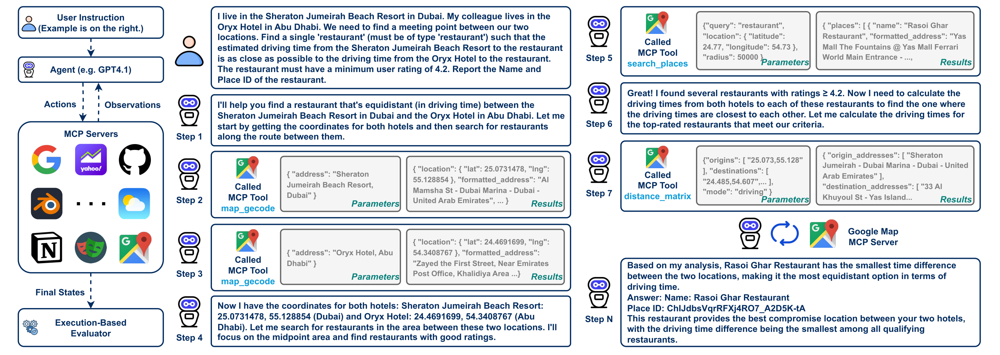
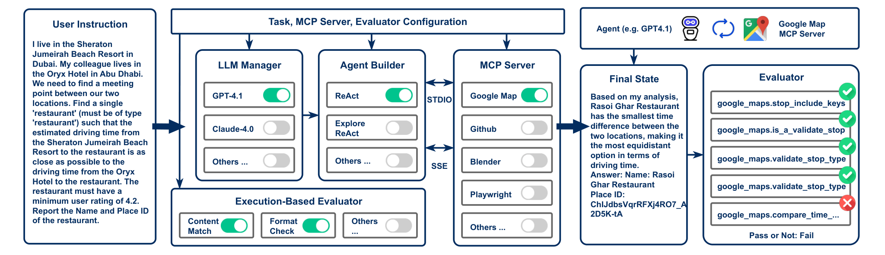
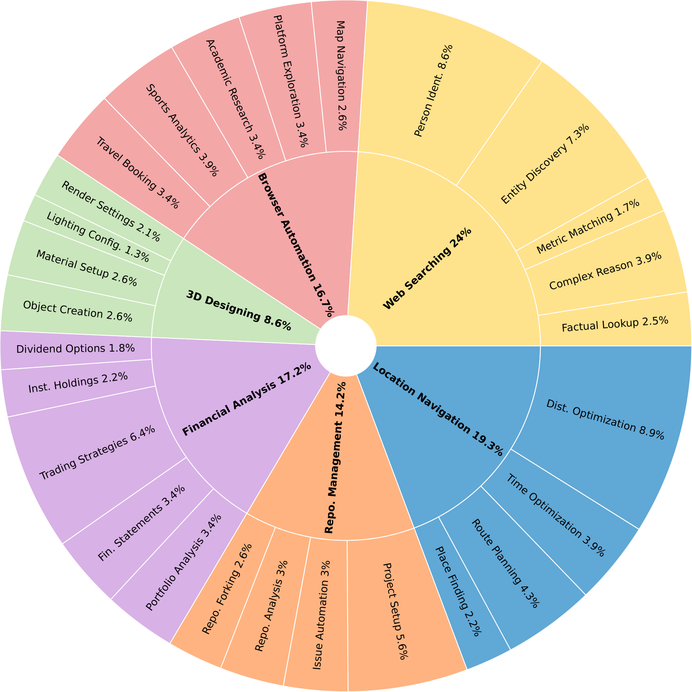
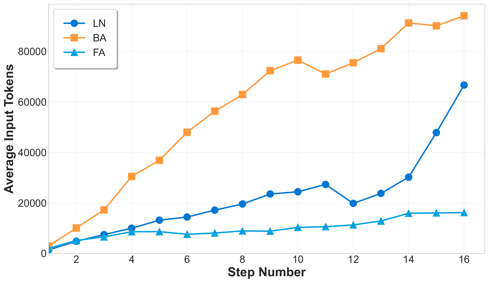
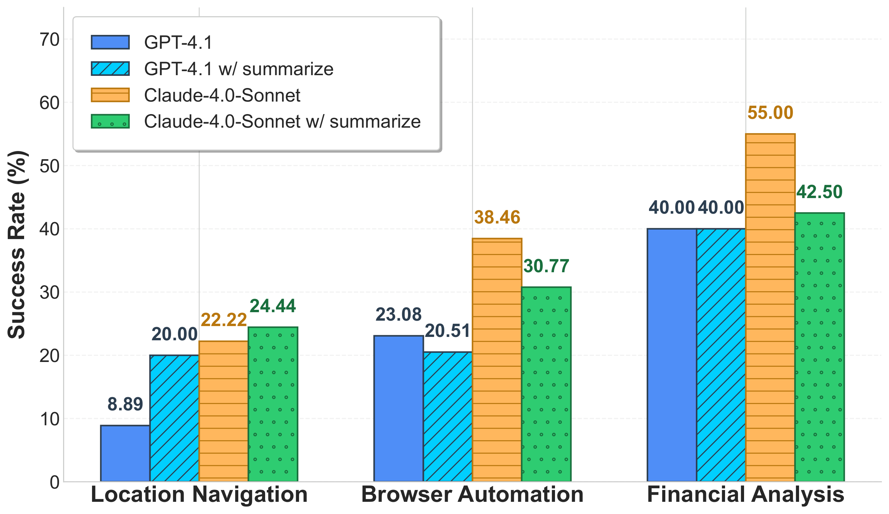
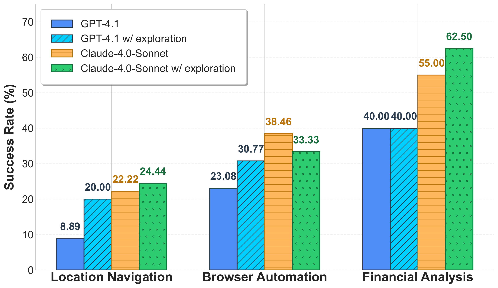

MCP-Universe：用真实世界 MCP server 给大模型做一次硬核体检
MCP-Universe: Benchmarking Large Language Models with Real-World Model Context Protocol Servers
①开源贡献 Open-source Artifacts
这是一篇 benchmark + 评测框架 类论文，核心交付物不是模型权重，而是一套可复现、可扩展的评测体系。作者把评测框架（含 task 配置、execution-based evaluator、Gradio UI、leaderboard）整体开源，许可证为 Apache-2.0；其中几个 MCP server（Yahoo Finance、Blender、Google Search、Weather、Date）也直接放在仓库里。以下链接均经核实可访问。
| 类型 | 是否开源 | 内容 / 链接 |
|---|---|---|
| 代码 Code（评测框架） | ✔ | github.com/SalesforceAIResearch/MCP-Universe 包含 agent 实现（ReAct / Explore-ReAct / 接 OpenAI Agent SDK）、LLM Manager、MCP server 编排、evaluator 与 Gradio UI；Apache-2.0；Python 3.10+。 |
| 数据集 / 任务 Tasks | ✔ | 231 个任务以 JSON 配置形式随仓库发布（mcpuniverse/benchmark/configs/），含每个任务对应的 evaluator 定义。无需训练数据——这是评测集而非训练集。 |
| 环境 / Benchmark（MCP servers） | ✔ | 11 个 MCP server：官方的 Google Maps / GitHub / Playwright / Notion / Fetch，加上作者基于官方 API 自建并放进仓库的 Yahoo Finance、Blender、Google Search、Weather、Date，以及 PyPI 上的 Calculator。链接见下方 server 表。 |
| 模型权重 Weights | — | 不适用。论文只评测现有模型（GPT-5、Claude、Grok、Gemini、GLM-4.5、Qwen3、DeepSeek-V3 等），不训练新模型。 |
| 项目主页 / Demo / Leaderboard | ✔ | mcp-universe.github.io：持续更新的 leaderboard（ReAct / Function-Call / Agent 三个 track），并提供 Discord 社区与提交入口。 |
②研究动机与贡献 Motivation & Contribution
背景：MCP 是什么，为什么重要
MCP（Model Context Protocol）由 Anthropic 于 2024 年底提出，被称为 “AI 界的 USB-C”。它要解决的是长期存在的 “data silo / 集成碎片化” 问题：过去每接一个外部数据源或工具，都要写一套定制 integration，模型被困在信息孤岛里。MCP 用统一接口（基于 JSON-RPC 2.0，走 STDIO / SSE transport）把这件事标准化，定义了三层架构——host（AI 应用）、client（通信桥）、server（能力提供方，对外暴露 tool / prompt / resource）。发布后 OpenAI、Google Gemini 纷纷宣布支持，Cursor、Cline 等开发平台也已集成。换句话说，MCP 很可能是未来 agent 调用外部世界的统一底座。
问题：现有评测配不上这个新范式
尽管 MCP 势头很猛，怎么衡量 LLM 在 MCP 范式下的真实能力，却是空白。作者把现有工作的痛点拆得很细：
- 传统 benchmark 各管一段、且不接真实 server。instruction following（IFEval）、数学（GSM8k）、function calling（BFCL）都只考察 LLM 的孤立能力，没有“接入真实 MCP server、跨场景完成任务”的综合评估。
- MCP-RADAR：旧瓶装新酒。它把 HumanEval、GSM8k 等已有数据集“改写”成 MCP 形式，本质是衍生数据集，既覆盖不了真实应用的广度，也有 data leakage（数据泄漏/被预训练见过）的隐患。
- MCPWorld：太依赖 GUI。仍重度依赖图形界面，对 MCP 原生 workflow 覆盖不足。
- MCPEval / LiveMCPBench：用 LLM-as-a-judge。而很多任务依赖实时数据（航班价格、股价、GitHub issue 数…），LLM judge 的知识是静态的、根本没法判定；况且 LLM judge 还有 style bias 和幻觉问题。
作者用一张表把同期 MCP benchmark 的三个关键维度摆出来对比（原文 Table 1），MCP-Universe 是唯一三项全勾的：
| Benchmark | Real-World Integration （接真实 server） | Temporal Dynamics （含实时/时变任务） | Exec. Eval. （执行式评测） |
|---|---|---|---|
| MCPWorld | ✔ | ✘ | ✔ |
| MCP-RADAR | ✘ | ✘ | ✔ |
| MCPEval | ✘ | ✔ | ✘ |
| LiveMCPBench | ✔ | ✔ | ✘ |
| MCP-Universe | ✔ | ✔ | ✔ |
核心贡献
- 第一个面向真实 MCP server 的综合 benchmark。6 大领域、11 个真实 MCP server（共 133 个 tool）、231 个人工设计的难任务（Location Navigation / Repository Management / Financial Analysis / 3D Designing / Browser Automation / Web Searching）。所有任务都连真实数据源与环境，而非模拟。
- 一套严格的 execution-based 评测框架。放弃 LLM-as-a-judge，改用三类自动评测器——format（格式合规）、static（时间不变的内容比对）、dynamic（自动抓取实时 ground truth），使得“买未来某天的最便宜机票”“查某地实时天气”这种时变任务也能跨时间稳定打分。
- 系统性揭示当前 agent 的根本短板。即便 SOTA 模型成功率也很低（GPT-5 43.72%），并定位出三大瓶颈：long-context challenge（步数一多 token 爆炸）、unknown-tools challenge（模型不熟悉具体 tool 的用法/参数）、cross-domain 能力高度不均；还发现企业级 Cursor agent 并不优于朴素 ReAct。框架带 UI、可扩展，方便社区接入新 agent / 新 server。
③方法 Method
MCP-Universe 不是一个“算法”，而是一套评测系统，由三块构成：(1) 可扩展、易用的评测框架；(2) 一批扎根真实 MCP server 场景的任务指令；(3) 一套 execution-based 评测器。下面先看一个真实任务长什么样，再讲框架结构、形式化定义、server 选型、任务与评测器设计。

maps_geocode / search_places / distance_matrix 等 tool，逐步缩小候选、计算时间差，最终给出餐厅名与 Place ID。这张图浓缩了 benchmark 想考察的五大真实挑战：真实 tool 使用、long-horizon 多轮调用、长上下文、证据分散、tool 空间大。整体框架
如下图所示，框架以“任务规格”为输入，自动编排整条评测流水线：LLM Manager 负责模型配置/API/统一 prompt 格式（支持 GPT-5、Claude-4.0-Sonnet 等）；Agent Builder 构造 agent（支持 ReAct、ReAct with Exploration 等）；MCP Server 模块按任务挂载所需 server（走 STDIO / SSE），用各自真实的 API endpoint 与鉴权；最后 Execution-Based Evaluator 对终态做客观判定，输出二元 pass/fail，并记录完整交互日志。整个流程支持单 server 与多 server 两种配置。

形式化定义
把 server 集合记为 $S=\{s_1,\dots,s_k\}$，每个 server $s_i$ 通过 MCP 暴露一组 tool $T_i=\{t_{i,1},\dots,t_{i,|T_i|}\}$。一个任务 $\tau$ 定义为三元组 $(G, C, T_{\mathrm{available}})$：
- $G$：goal specification，要达成的目标；
- $C$：初始 context 与背景信息；
- $T_{\mathrm{available}}=\bigcup_{i\in I} T_i$：本任务可用的 tool 集合，$I\subseteq\{1,\dots,k\}$ 指明挂载了哪些 server。
agent 的挑战是：在仅有部分信息的情况下，识别 → 排序 → 调用 $T_{\mathrm{available}}$ 中合适的 tool 来达成 $G$，过程中要适配不同 tool 接口、处理工具返回的歧义与失败。评测时，设模型集合 $M=\{m_1,\dots,m_n\}$、agent 架构集合 $A=\{a_1,\dots,a_p\}$（如 ReAct）。对某个 $(m,a)$ 与任务 $\tau$，交互产生一条对话轨迹 $R=(r_1,\dots,r_T)$，每个 $r_t$ 含 agent 的输出与工具调用。评测函数
$$ E: M \times A \times \mathcal{T} \rightarrow \{0,1\} $$若任务按预定义成功标准完成则记 $1$，否则 $0$。成功由一组自动检查（核验结构化输出、终态等）共同决定。把 $E(m,a,\tau)$ 在所有任务上聚合，就得到该 agent 在 MCP 工具使用上的量化能力——这就是主表里的 success rate (SR)。
6 个领域、11 个真实 MCP server
“坚持用真实 server 而非模拟环境”是本工作的根本设计原则。11 个 server 共 133 个 tool，组织成 6 大领域：
- Location Navigation：官方 Google Maps MCP，含地点检索、路线规划、距离计算等，考察地理空间推理。
- Repository Management：GitHub MCP，含仓库检索、issue 跟踪、代码编辑等真实版本控制操作。
- Financial Analysis：Yahoo Finance MCP，含股价监控、股东信息、期权追踪，全部基于实时行情。
- 3D Designing：Blender MCP，含建模、资产操作、材质设置等专业 CAD 操作。
- Browser Automation：Playwright MCP，含浏览器导航、点击、页面快照等完整 web 自动化能力。
- Web Searching：Google Search MCP（搜）+ Fetch MCP（取 URL 内容），考察开放域信息搜寻。
此外还挂载若干辅助 server 增加复杂度：Notion、Weather、Date、Calculator。所有 server 链接（原文 Table 6）如下，其中标“仓库内”的是作者基于官方 API 自建并随仓库发布：
| MCP Server | 来源 |
|---|---|
| Google Maps | 官方（modelcontextprotocol/servers-archived） |
| GitHub | 官方（github/github-mcp-server） |
| Yahoo Finance | 仓库内自建（基于官方 API） |
| Blender | 仓库内自建 |
| Playwright | 官方（microsoft/playwright-mcp） |
| Google Search | 仓库内自建 |
| Fetch | 官方（modelcontextprotocol/servers） |
| Notion | 官方（makenotion/notion-mcp-server） |
| Weather / Date | 仓库内自建 |
| Calculator | PyPI（mcp-server-calculator） |
任务设计：刻意“做难”
因为 MCP 还很新、缺高质量用例，231 个任务全部由作者手工设计。判定难度的准则很实用：如果一个任务不用 MCP server 就能轻松答出，或挂上 server 后 5 次重试内总能稳定解出，就算“太简单”，作废重想。每个领域设计 4–5 类子任务覆盖最常见场景（如 Location Navigation 分 route planning / optimal stops / location searching / place finding 四类；Financial Analysis 分 portfolio analysis / financial statements / trading strategies / institutional holdings / dividend analysis 五类……）。每个任务都由其他作者交叉检查可行性、歧义性与正确性。下图是任务在各领域的分布。

三类 execution-based 评测器（关键创新）
作者明确反对 LLM-as-a-judge：实时数据任务它判不了，而且 LLM judge 有 style bias 和幻觉。虽然 execution-based 路线更费人力，但作者认为这是公平、全面评测的唯一可行路径。84 个 unique evaluator 分三类：
- Format Evaluators（4 个，4.8%）：检查 agent 是否严格遵守格式要求（如最终答案的结构）。
- Static Evaluators（32 个，38.1%）：答案不随时间变化的任务，人工收集正确答案后写评测器比对——例如路线里城市的数量、某球员历史进球数、历史股价。
- Dynamic Evaluators（48 个，57.1%）：答案需随实时数据更新的任务——例如未来某天某航班价格、某地天气、某仓库当前 issue 数。作者写自动评测器在评测时现抓 ground truth，从而保证不同时间戳下评测结果稳定。这是 MCP-Universe 区别于其他 benchmark 的核心：dynamic evaluator 占比最大（57%），意味着过半任务都是“活”的。
- 主实验默认 agent 框架是 ReAct（先 thought 后 action）；唯一例外是 GPT-OSS——它指令跟随太差、无法跟 ReAct prompt，改用 OpenAI Agent SDK（因此它没有 AS 步数指标）。
- 所有模型 temperature=1.0。评测的开源模型均≥120B 参数；所有模型都在 lmsys Chatbot Arena 上排名靠前。
- 评测器实现是领域专属的，例如 Google Maps 用 stop type 校验、GitHub 用 branch 校验。
- 模型版本被精确锁定（如 GPT-5 =
gpt-5-2025-08-07，Claude-4.0-Sonnet =claude-sonnet-4-20250514，Claude 默认不开 thinking 模式），保证可复现。
④实验评估 Evaluation
评测设置
- 被测模型：10 个专有 + 6 个开源。专有：GPT-5、o3、o4-mini、GPT-4.1、GPT-4o（OpenAI），Claude-4.0-Sonnet、Claude-3.7-Sonnet（Anthropic），Grok-4（xAI），Gemini-2.5-Pro/Flash（Google）。开源（≥120B）：GLM-4.5（Zai）、Kimi-K2（Moonshot）、Qwen3-Coder、Qwen3-235B-A22B（Qwen）、DeepSeek-V3-0324、GPT-OSS-120B。
- 对比基线 / 变量：主表统一用 ReAct；另设三组对照——加 summarization agent（治 long-context）、加 exploration 阶段（治 unknown-tools）、挂更多无关 server（测鲁棒性）；以及 agent 框架对比（ReAct vs Cursor Agent vs OpenAI Agent SDK）。
- 指标（均越高越好，除 AS）：SR（success rate，任务通过率，主指标）；AE（average evaluator score，每个任务平均通过的 evaluator 比例，比 SR 更细粒度）；AS（average steps，成功任务的平均步数，衡量效率，越低越省）。
主结果：连 GPT-5 也只有 43.72%
下表是原文 Table 3 的核心数字（各领域为 SR%，最右为总体 SR / AE / AS）。每列最高分标绿。
| Model | Loc. Nav. | Repo. Mgmt. | Fin. Ana. | 3D | Browser | Web | SR↑ | AE↑ | AS↓ |
|---|---|---|---|---|---|---|---|---|---|
| Proprietary Models | |||||||||
| GPT-5 | 33.33 | 30.30 | 67.50 | 52.63 | 35.90 | 45.45 | 43.72 | 60.23 | 8.22 |
| Grok-4 | 28.89 | 12.12 | 40.00 | 26.32 | 41.03 | 41.82 | 33.33 | 49.01 | 7.75 |
| Claude-4.0-Sonnet | 22.22 | 12.12 | 55.00 | 26.32 | 38.46 | 21.82 | 29.44 | 50.61 | 7.46 |
| o3 | 26.67 | 6.06 | 40.00 | 26.32 | 25.64 | 29.09 | 26.41 | 38.95 | 4.82 |
| o4-mini | 26.67 | 18.18 | 40.00 | 36.84 | 23.08 | 18.18 | 25.97 | 40.38 | 7.90 |
| Claude-3.7-Sonnet | 13.33 | 18.18 | 40.00 | 36.84 | 23.08 | 21.82 | 24.24 | 40.36 | 7.16 |
| Gemini-2.5-Pro | 13.33 | 12.12 | 50.00 | 21.05 | 25.64 | 12.73 | 22.08 | 36.93 | 6.98 |
| Gemini-2.5-Flash | 15.56 | 12.12 | 37.50 | 21.05 | 30.77 | 14.55 | 21.65 | 33.99 | 8.26 |
| GPT-4.1 | 8.89 | 6.06 | 40.00 | 26.32 | 23.08 | 10.91 | 18.18 | 41.32 | 5.24 |
| GPT-4o | 8.89 | 9.09 | 35.00 | 26.32 | 12.82 | 9.09 | 15.58 | 37.03 | 6.03 |
| Open-Source Models | |||||||||
| GLM-4.5（最佳开源） | 17.78 | 9.09 | 50.00 | 26.32 | 15.38 | 27.27 | 24.68 | 41.16 | 7.33 |
| Qwen3-Coder | 8.89 | 3.03 | 50.00 | 26.32 | 25.64 | 10.91 | 19.91 | 37.78 | 7.78 |
| Kimi-K2 | 11.11 | 9.09 | 47.50 | 15.79 | 15.38 | 14.55 | 19.05 | 35.10 | 6.07 |
| Qwen3-235B | 11.11 | 9.09 | 50.00 | 15.79 | 15.38 | 9.09 | 18.18 | 38.53 | 5.74 |
| DeepSeek-V3 | 11.11 | 6.06 | 30.00 | 26.32 | 12.82 | 7.27 | 14.29 | 35.82 | 5.06 |
| GPT-OSS-120B | 6.67 | 6.06 | 35.00 | 10.53 | 5.13 | 5.45 | 11.26 | 26.34 | — |
怎么读这些数字：
- 整体很低。最强的 GPT-5 也只有 43.72%，Grok-4 33.33%、Claude-4.0-Sonnet 29.44%。这与它们在通用 benchmark 上的“高分形象”形成巨大反差——说明在真实 MCP 环境里，通用能力 ≠ 可用能力。
- 领域差异极大。同一个模型在不同领域可以从 67.5% 掉到个位数。Location Navigation 全员 <35%，GPT-4.1/GPT-4o 甚至 <10%；Repository Management 只有 GPT-5 过 30%；3D Designing 只有 GPT-5 过 50%。Grok-4 在 Browser Automation 反超所有人（41.03%），因为这块特别吃“在复杂网页里推理+操作”的能力。
- 开源仍有明显差距，但 GLM-4.5 是亮点。GLM-4.5 以 24.68% 成为最佳开源模型，甚至高于 o4-mini（25.97% 略高，但 GLM 高于 Claude-3.7-Sonnet 24.24%、o4-mini 之外的多数）；总体看 SOTA 专有与开源之间的 gap 依然显著。
- SR 与 AE 不总是同向。Claude-4.0-Sonnet 的 AE（50.61%）甚至略高于 Grok-4（49.01%），但 Grok-4 的 SR 更高（33.33% vs 29.44%）——说明“通过更多 evaluator”不等于“完整做完任务”。
- 效率维度（AS）有意思。o3 只用 4.82 步就排到 SR 第四（26.41%），是最“惜步”的模型；而 GPT-5（8.22 步）、Grok-4（7.75 步）靠更多步数换更高成功率。开源里 DeepSeek-V3 最省（5.06 步）。
分评测器类型：失败主要发生在“内容”而非“格式”
原文 Table 4 把成绩拆成 format / static / dynamic 三类（成功率%）。一个清晰的结论：很多模型 format ≥80%（DeepSeek-V3 96.58%、Claude-4.0-Sonnet 98.29%、GPT-4.1 95.73%），但 static/dynamic 普遍只有 40–60%。也就是说，瓶颈在内容正确性，而不是格式合规。
| Model | Format | Static | Dynamic |
|---|---|---|---|
| GPT-5 | 88.89 | 61.92 | 65.96 |
| Claude-4.0-Sonnet | 98.29 | 61.92 | 54.74 |
| Grok-4 | 88.03 | 49.04 | 52.98 |
| DeepSeek-V3 | 96.58 | 52.88 | 48.07 |
| GPT-4.1 | 95.73 | 57.53 | 49.47 |
| Gemini-2.5-Pro | 64.10 | 39.18 | 42.46 |
| Gemini-2.5-Flash | 51.28 | 45.21 | 30.88 |
| o3 | 73.50 | 38.63 | 43.16 |
反直觉的一点：一些 reasoning 模型反而格式更差——o3 只有 73.50%、Gemini-2.5-Pro 64.10%、Gemini-2.5-Flash 51.28%，明显不如非 reasoning 的 Claude-4.0-Sonnet（98.29%）。作者在附录给了个“naive error”例子：o3 有时会直接把 prompt 里的格式要求原样抄下来、啥也不干，对这种强模型来说相当诡异。
三大挑战的专项分析（决定性实验）
① Long-context challenge。Location Navigation、Browser Automation、Financial Analysis 这三块的 server 会返回超大内容（Google Maps 一次返回大量地点详情、Playwright 可能返回整页 HTML、Yahoo Finance 返回长时间跨度的逐日行情）。如图 4 左，输入 token 随交互步数迅速膨胀，常常撑爆上下文窗口、拖垮多步任务（该实验基于 Claude-4.0-Sonnet）。作者试了个直接的解法——在每步加一个 summarization agent 压缩 server 原始输出（图 4 右）——结果喜忧参半：在 Location Navigation 上能提升 GPT-4.1、Claude-4.0-Sonnet，但在 Browser Automation / Financial Analysis 上要么没用要么变差。结论：简单 summary 救不了，long-context 是这个 benchmark 的真·硬骨头。


② Unknown-tools challenge。错误分析显示模型常常不会用这些 tool。一个典型例子（图 5 左）：Yahoo Finance 取股价要求 start/end 日期不同，但模型经常把两者填成同一天 → 直接报错。作者引入一个 exploration 阶段：先让模型自由地试用 tool、建立对其能力/约束的认知（exploitation 阶段再用 ReAct 正式解题）。效果同样不是万灵药（图 5 右）：GPT-4.1 在 Browser Automation +7.69 个点（到 30.77%）、Claude-4.0-Sonnet 在 Financial Analysis +7.50 个点（到 62.50%）；但 Claude 在 Browser Automation 反而下降、GPT-4.1 在 Financial Analysis 没动。结论：exploration 对“信息搜寻/推理类”有帮助，对“需要规划状态变更”的任务不灵。

③ 挂更多无关 server（鲁棒性）。主表只挂与任务直接相关的 server。这里给所有任务统一挂 7 个 server（94 个 tool）引入噪声，性能明显下滑：Claude-4.0-Sonnet 在 Location Navigation 从 22.22% 掉到 11.11%；GPT-4.1 在 Browser Automation 从 23.08% 掉到 15.38%。说明 tool 空间一变大，模型挑对工具的能力就明显吃紧。
企业级 agent 不一定更强（原文 Table 5）
同样用 Claude-4.0-Sonnet 做 backbone：朴素 ReAct（29.44%）反而高于企业级 Cursor Agent（26.41%）。Cursor 在 Browser Automation 更强（43.59% vs 38.46%），但在 Web Searching 严重拉胯（7.27% vs 21.82%）——因为它倾向用自己的内部工具而非 benchmark 的 MCP server。另一边，o3 用 OpenAI Agent SDK（31.60%）则明显高于 o3+ReAct（26.41%），且是所有 agent-backbone 组合里的最高分。两个事实合起来说明：agent 框架设计确实影响很大，但“企业级”不等于“更好”，关键是 agent 与具体模型的匹配。
⑤洞见 Insights
- “真实 + 时变”是 MCP 评测的灵魂。本文最有方法论价值的设计是 dynamic evaluator（占 57%）：不预存答案、评测时现抓 ground truth。这把“实时数据任务无法客观评测”这个老大难直接解决了，也顺带绕开了 LLM-as-a-judge 的 style bias / 幻觉。任何想做“活的、接真实世界”的 agent benchmark 都可借鉴这一招。
- 当前 LLM 的失败不在“格式”而在“内容”。format 普遍 ≥80% 但 content（static/dynamic）只有 40–60%——说明这一代模型“会按规矩输出”，但在真实工具链上“做对事”仍很弱。把研究火力放在内容正确性（正确选 tool、正确填参、正确串多步），比继续优化格式合规更值。
- 长上下文与 unknown-tools 没有便宜的解法。summarization 和 exploration 这两个直觉上很对的补丁都只在部分域有效、在另一些域反而有害。这反过来证明 MCP-Universe 抓到了真问题，也提示需要更自适应的 context 管理与 tool 学习机制，而非一刀切的 trick。
局限与未来
- 规模相对小、且重人工。231 个任务、84 个 evaluator 全靠手工设计与交叉检查；execution-based 路线作者自己也承认“依赖大量人力”。扩规模/扩领域的成本不低。
- 依赖真实外部服务，存在维护与不稳定风险。接真实 server 的代价是：API 变更、限流、服务下线都可能影响可复现性（这也是为何要把部分 server 收进仓库自建）。dynamic evaluator 缓解了“答案漂移”，但“服务可用性漂移”仍在。
- 补丁式方法收效有限，呼唤更强 agent 设计。作者把 summarization / exploration 定位为 preliminary 探索；真正的提升空间留给了未来——更鲁棒的 long-context 处理、在线 tool 学习、模型-框架协同设计。
- 榜单会过时。论文 v1 的 GPT-5 43.72% 只是某一时刻的快照；线上 leaderboard 持续刷新，读者应以官网为准看“当下最强多少”。
与相关工作的关系
按本文自身的论述定位：相对 web navigation（WebArena、Mind2Web 系列等）、GUI 操作（OSWorld、WindowsAgentArena、UI-Vision）、软件工程（SWE-bench、DevBench）、function/tool calling（APIBank、ToolBench、GAIA、AppWorld、τ-Bench、BFCLv3）这些已有 agent benchmark，MCP-Universe 的差异在于专门面向 MCP 协议 + 真实 server + 时变任务 + 执行式评测 的组合。对同期 MCP benchmark，它用一张三维对照表（real-world / temporal / exec-eval）把自己摆成唯一全勾者：MCPWorld 缺时变、MCP-RADAR 是改写旧数据且不接真实 server、MCPEval 与 LiveMCPBench 用 LLM-as-judge 难以应对实时任务。一句话——MCP-Universe 想做的是 MCP 时代“接真实世界、还能自动判分”的标准考场。